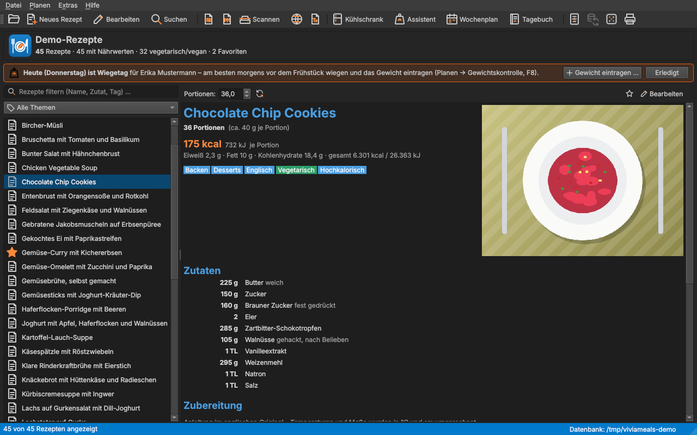

Das Hauptfenster

Das Hauptfenster ist zweigeteilt. Die Trennlinie zwischen den Hälften lässt sich mit der Maus verschieben.
Die Rezeptliste (links)
- Filterfeld „Rezepte filtern (Name, Zutat, Tag) …“: Schon beim Tippen zeigt die Liste nur noch Rezepte, deren Name, Zutaten oder Tags den Text enthalten. Das Kreuz im Feld hebt den Filter auf.
- Themenauswahl darunter: „Alle Themen“, „Favoriten“ oder ein Tag wie „Suppen“ oder „vegetarisch“.
- Über der Liste steht, wie viele Rezepte die Datenbank enthält, wie viele davon Nährwerte haben, wie viele vegetarisch oder vegan sind und wie viele als Favorit markiert sind.
- Ein Klick auf ein Rezept zeigt es rechts an. Ein Doppelklick öffnet es im Editor.
- Die rechte Maustaste öffnet ein Kontextmenü: Bearbeiten, Als LaTeX-Datei exportieren, Als LibreOffice-Writer-Datei exportieren, Ins Ernährungstagebuch eintragen, Als .vmr-Datei speichern, Drucken, Löschen.
Die Rezeptansicht (rechts)
Rechts oben steht das Rezeptfoto, daneben Titel, Portionen (mit dem Gewicht einer Portion), Energie je Portion in kcal und kJ, die übrigen Nährwerte und die Tags. Darunter folgen die Zutaten in deutschen Küchenmaßen, die Zubereitung, die Nährwerttabelle und die Quelle.
- Portionen: Über dem Rezept lässt sich die Portionenzahl ändern – alle Mengen werden umgerechnet. Der runde Pfeil daneben stellt die ursprüngliche Zahl wieder her. Das Rezept selbst bleibt unverändert.
- Stern: markiert das Rezept als Favorit (bzw. hebt die Markierung auf).
- Bearbeiten: öffnet das Rezept im Editor.
Menüs und Werkzeugleiste
| Menü | Inhalt |
|---|---|
| Datei | Datenbank anlegen und öffnen, zuletzt geöffnete Datenbanken, Rezept neu/bearbeiten/löschen, Suchen, Import, Export (mit Menüassistent), Abgleich, Datenbank leeren, Drucken, Beenden |
| Planen | Kühlschrank (F5), Assistent Gewichtskontrolle (F6), Ernährungstagebuch (F9), Gewichtskontrolle (F8), Wochenmenü-Plan (F7), Zufälliges Rezept (Strg+R) |
| Extras | Nährwerttabelle, eigene Lebensmittel, Zutaten ohne Nährwerte, Doubletten, Nährwerte und Tags neu berechnen, Umlaute korrigieren, DeepL-Übersetzung, Darstellung, Einstellungen |
| Hilfe | Handbuch (F1), Über ViviaMeals, Über Qt |
Die Werkzeugleiste enthält die häufigsten Befehle als Symbole. Fährt man mit der Maus darüber, erscheint eine kurze Erklärung; die Statuszeile unten im Fenster beschreibt den Befehl genauer. Alle Tastenkürzel stehen im Anhang unter Tastenkürzel.
Statuszeile und Hinweise
Die Statuszeile zeigt rechts den Ordner der geöffneten Datenbank und – wenn eingerichtet – den Stand des Abgleichs („⇅ Website · abgeglichen um 14:32“).
Ist für eine Person im Assistenten Gewichtskontrolle ein Wiegetag eingestellt, erscheint an diesem Tag über der Rezeptliste ein orangefarbener Hinweis mit den Schaltflächen Gewicht eintragen … und Erledigt.
Darstellung und Bildschirmgröße
Unter Extras → Darstellung wählen Sie das Aussehen: die Stile Ihres Betriebssystems sowie die dunklen Themes „Dark“ und „Visual Studio Code Dark“. Die Umstellung wirkt sofort; die Symbole passen sich hell bzw. dunkel an.

ViviaMeals merkt sich Lage und Größe aller Fenster und Dialoge. Auf kleinen Bildschirmen werden Dialoge automatisch verkleinert, in den sichtbaren Bereich geholt und bei Bedarf rollbar. Die Schriftgröße passt sich der Bildschirmgröße an; unter Extras → Einstellungen → Allgemein lässt sie sich auch fest einstellen (85 bis 140 %).
Rezeptdatenbanken
Eine Rezeptdatenbank ist ein gewöhnlicher Ordner. Sie können beliebig viele davon anlegen – etwa eine für den Alltag und eine für Backrezepte – und über Datei → Rezeptdatenbank öffnen … (Strg+O) oder Datei → Zuletzt geöffnet zwischen ihnen wechseln.
- Datei → Neue Rezeptdatenbank … legt eine neue, leere Datenbank an.
- Zum Sichern kopieren Sie einfach den ganzen Ordner, z. B. auf einen USB-Stick.
- Welche Dateien im Ordner liegen, steht im Anhang unter Dateien und Speicherorte.
- Profile, Gewichtsverlauf, Tagebuch und eigene Lebensmittel gehören nicht zu einer Datenbank, sondern zu Ihrem Benutzerkonto auf diesem Rechner – sie stehen in jeder Datenbank zur Verfügung.